119. Camshaft Position Actuator Housing Installation - Right Side
Camshaft Position Actuator Housing Installation - Right Side
Tools Required
EN 46109 Guide Pin Set
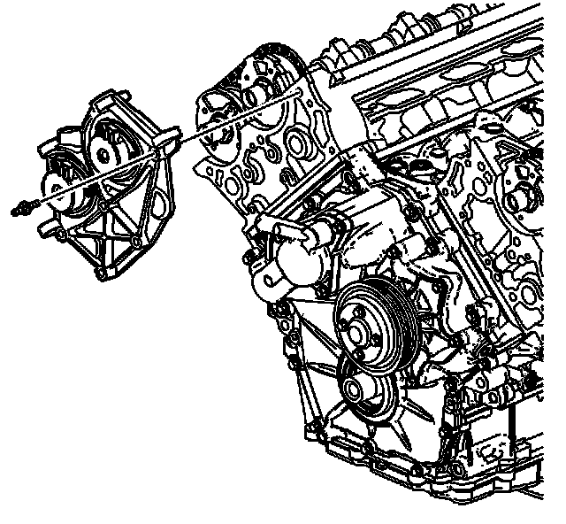
Notice: DO NOT remove the camshaft position actuator magnet unless it needs to be replaced. The camshaft position actuator magnet is precisely aligned to the camshaft position actuator oil control valve on the end of the camshaft during engine assembly. If the camshaft position actuator magnet is removed and/or needs to be replaced, it will be necessary to realign the camshaft position actuator magnet to the camshaft position actuator oil control valve after the camshaft position actuator housing is installed to the cylinder head. Failure to realign the camshaft position actuator magnet to the camshaft position actuator oil control valve can lead to poor engine performance and engine component damage.
1. Install the right camshaft position actuator housing.
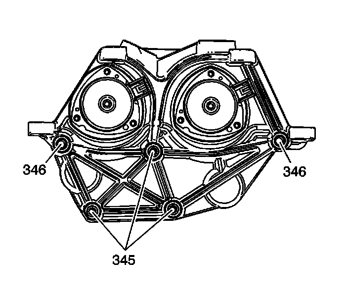
Notice: Refer to Fastener Notice (Fastener Notice) .
2. Install the right camshaft position actuator housing short studs (345) and long studs (346).
Tighten the right camshaft position actuator housing studs to 10 N.m (89 lb in).
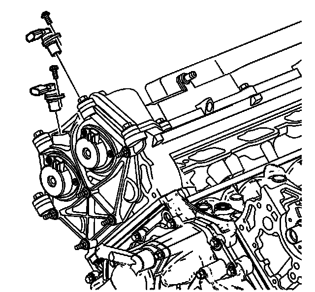
3. Install the right camshaft position sensors.
4. Install the right camshaft position sensor bolts.
Tighten the right camshaft position sensor bolts to 10 N.m (89 lb in).
Camshaft Position Actuator Magnet Alignment
1. If the camshaft position actuator magnet has been removed or is being replaced the camshaft position actuator magnet will need to be resealed to the camshaft position actuator housing and realigned to the camshaft position actuator oil control valve.
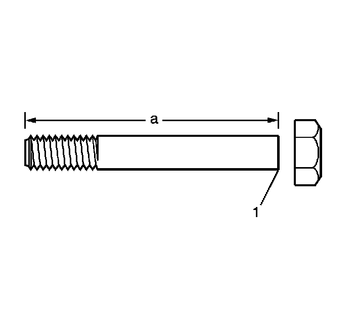
2. Use the 2 6 mm (0.236 in) pins, EN 46109-1, from the EN 46109 or make 2 loading pins from 2 6 mm (0.236 in) bolts at least 75 mm (3.00 in) long (a) with the hex head removed (1).
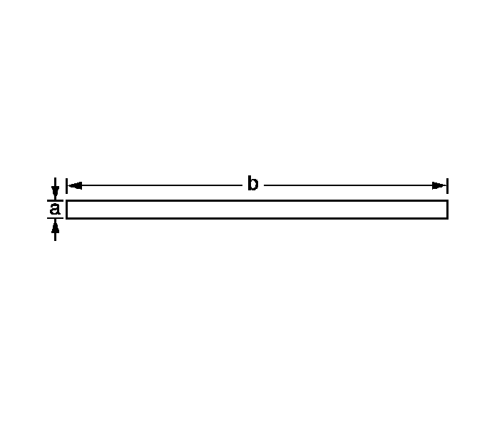
3. Make an alignment pin from 15/64 inch drill rod (a) with a diameter of 5.954 mm (0.2344 in) and at least 75 mm (3.00 in) long (b).
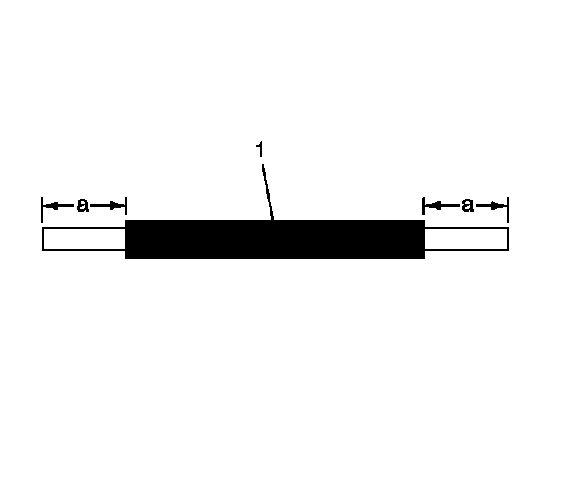
4. To verify proper insertion distance create a stop (1) on the alignment pin by placing tape or shrink tubing 13 mm (0.5118 in) from the end (a) that will be inserted through the camshaft position actuator magnet.
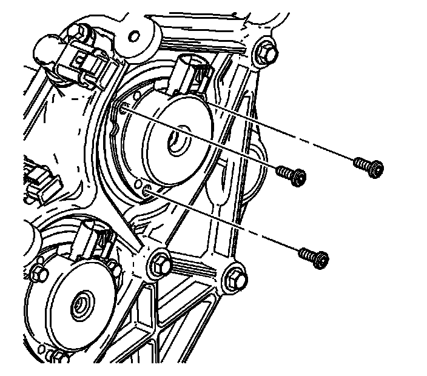
5. Remove the camshaft position actuator magnet bolts.
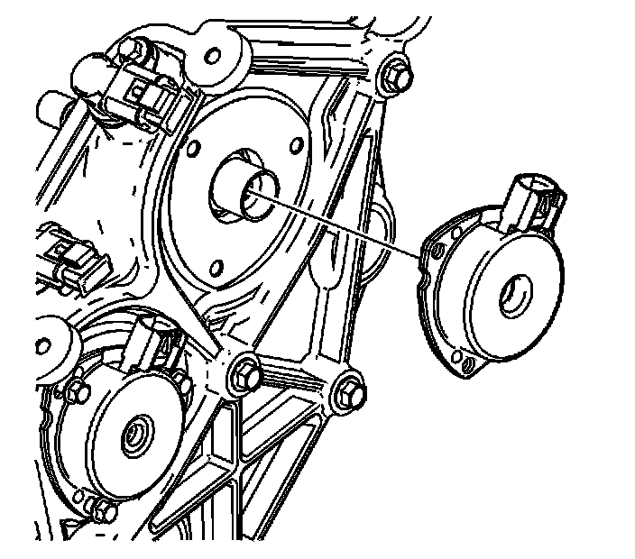
6. Remove the camshaft position actuator magnet.
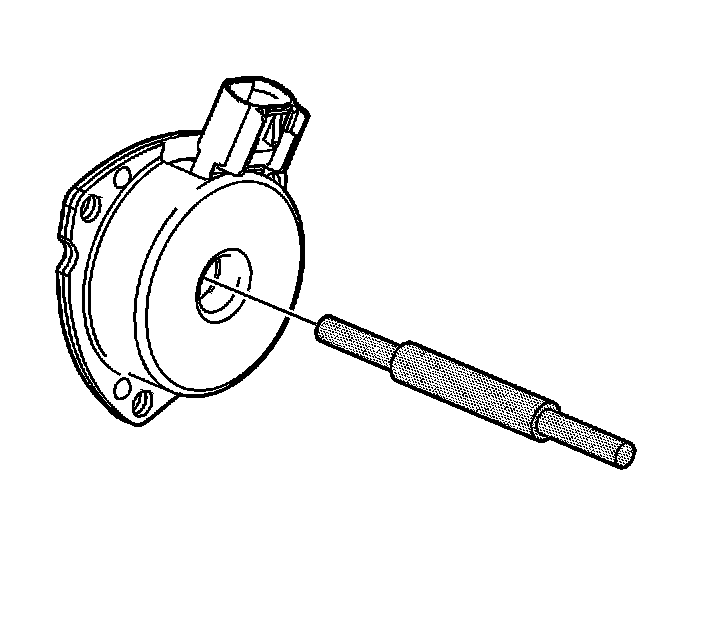
7. Verify that the alignment pin will pass through the camshaft position actuator magnet alignment hole.
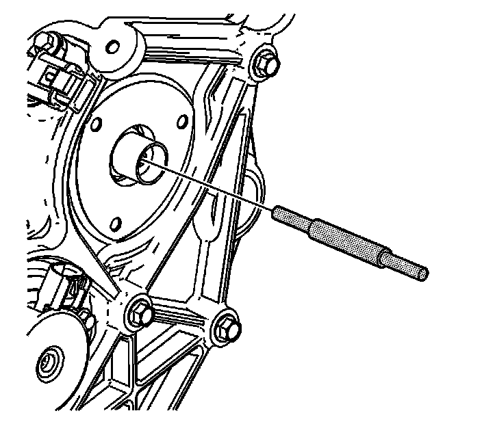
8. Verify that the alignment pin will fit into the alignment hole in the camshaft position actuator oil control valve.
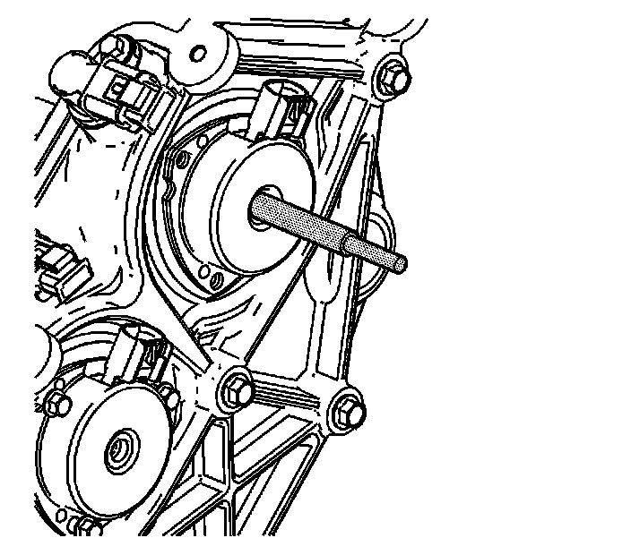
9. Place the camshaft position actuator magnet into place and verify the alignment pin will insert through the camshaft position actuator magnet and into the camshaft position actuator oil control valve to verify alignment pin stop distance.
10. Remove the camshaft position actuator magnet.
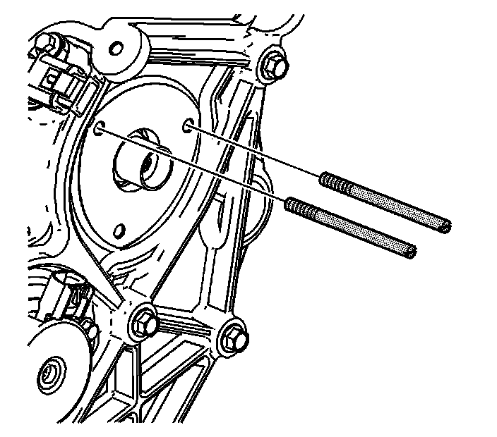
11. Install the 2 6 mm (0.236 in) loading pins in 2 of the camshaft position actuator magnet bolt holes in the camshaft position actuator housing.
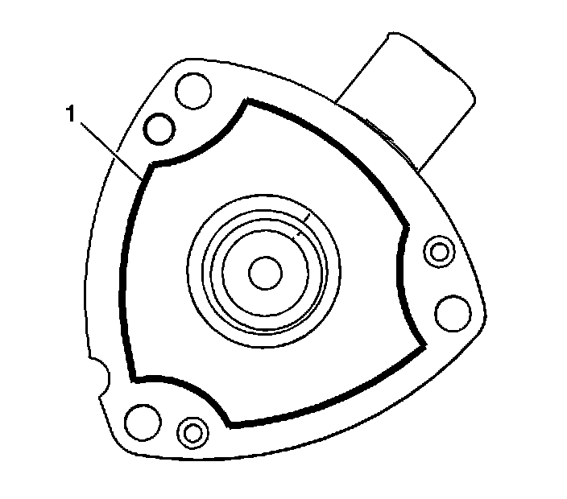
12. Apply a 2 mm (0.079 in) bead (1) of RTV sealant GM P/N 12378521 (Canadian P/N 88901148) or equivalent around the flange of the camshaft position actuator magnet as shown.
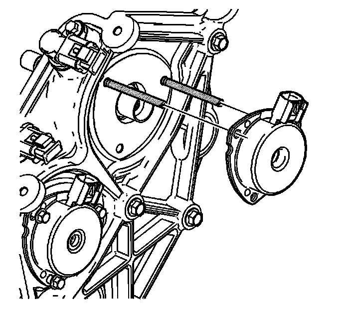
13. Slide the camshaft position actuator magnet over the 6 mm (0.236 in) loading pins.
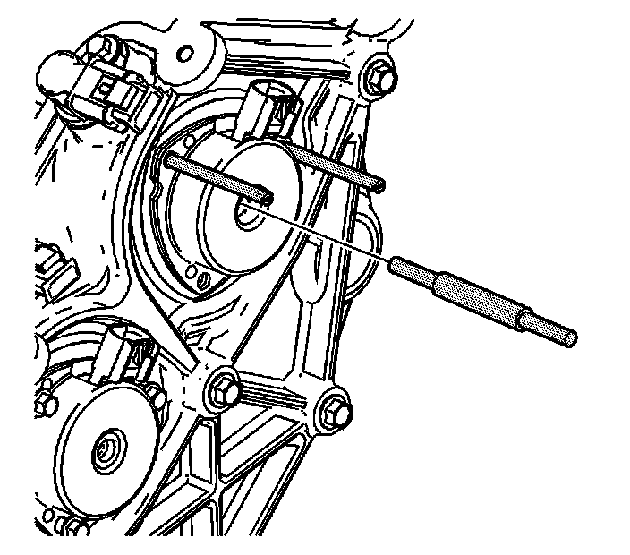
14. In order to align the camshaft position actuator magnet to the camshaft position actuator oil control valve, install the alignment pin through the camshaft position actuator magnet and into the camshaft position actuator oil control valve alignment hole.
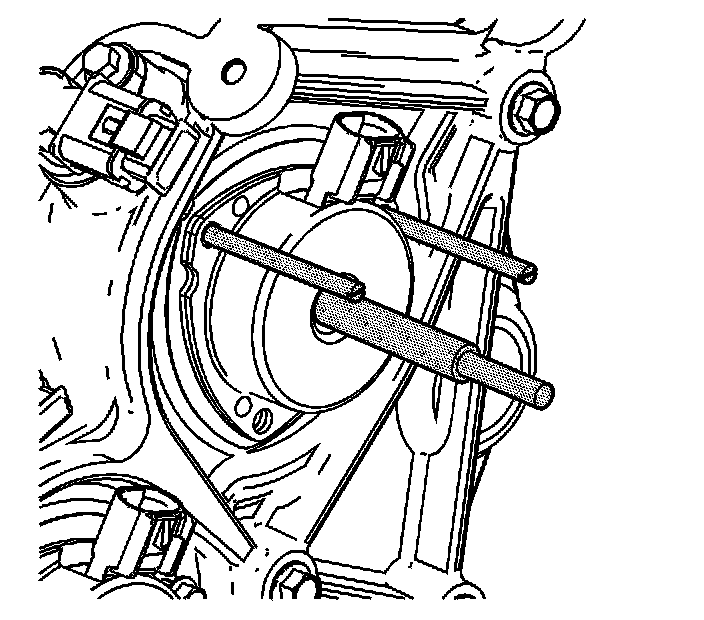
15. Verify that the alignment pin has been inserted into the camshaft position actuator oil control valve alignment hole by observing the stop has reached the hole in the camshaft position actuator magnet.
16. With the alignment pin still installed, remove the loading pins and install the camshaft position actuator magnet bolts.
Tighten the camshaft position actuator magnet bolts to 8 N.m (71 lb in).
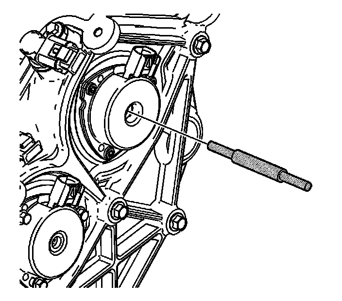
17. Remove the alignment pin.
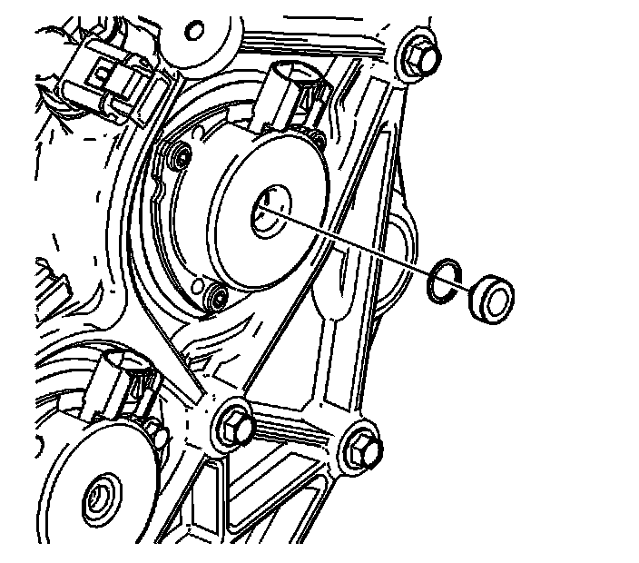
18. Install a NEW camshaft position actuator magnet plug.
19. Repeat steps 10 through 18 for any remaining camshaft position actuator magnets that have been removed.